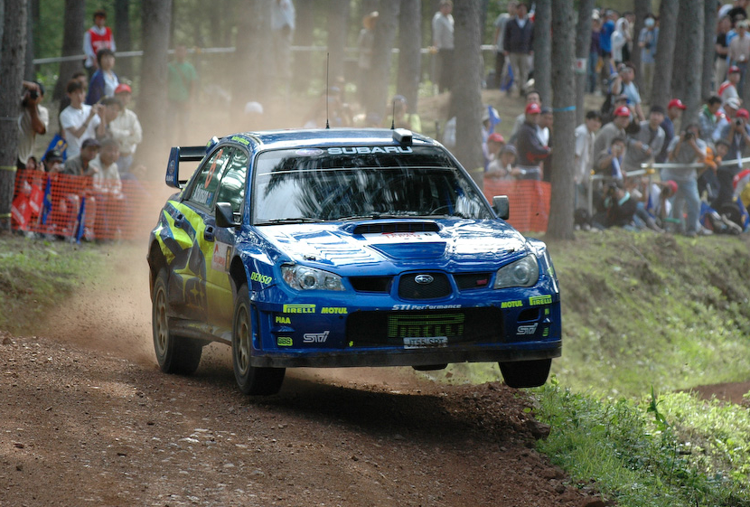

Rallying
This is the page where I get to talk about my favourite motorsport, and sport in general, Rally. As a summary, Rallying is a form of motorsport that takes place on public or private roads with modified production or specially built road-legal cars. Instead of running on a circuit, like most motorsports, it is instead ran in a point-to-point format in which drivers and their co-drivers drive between set control points, leaving at regular intervals from one or more starting points.
Here's a picture of Chris Atkinson driving a 2008 Subaru Impreza WRC. What's a co-driver?
So, I previously mentioned co-drivers, but what is a co-driver? Surely only one person can be driving the car at once, right? Well, during a rally, the co-driver's job is just as important as the driver's. The job of the co-driver is to guide the driver with brief but detailed descriptions of the upcoming road. They do this by going on a 'recce' run before racing, where the driver and co-driver make pacenotes.
So what are pacenotes?
Pacenotes are the brief but detailed descriptions given by the co-driver. As well as dictating the general route to be taken, in terms of turnings, junctions, etc., all notable features of the route which might affect the way it is driven at speed are included. These details include the distance between each feature, the degree and severity of bends, adverse camber, crests and hill jumpings, surface type and conditions, potholes, special instructions to the driver, etc. In order that the sheer quantity of detail is useful to a rally team, pacenotes are written in a tight shorthand which is read out loud by the navigator to the driver en route.
Here's a video demonstrating pacenotes.Example pacenotes
A number of systems have been devised, and there is no one "standard" for pacenotes. Some variations include the preferred language of the team, metric or imperial measurements, etc. Pacenotes for a typical world-class rally stage might run to many pages, and the road book for the event might be several thick bound volumes.
This is an example of how some pacenotes would be written down, followed by a translation of how they would be read aloud.
The numbers that follow left or right indicate the severity of the corners, 1 being very tight and 6 being a flat-out corner.
"MC1 100 KL2 100 R2 200 SQL 100 R4 50J!→R2+ (D/C!) 100 +SQR 400 F→CR→KL4 100 MC2"
Translation:
- From main control 1 (start), 100 metres straight to a kink left 2
- 100 meters, right 2
- 200m, square left
- 100m, right 4
- 50m, jump caution, into immediate right 2 tightens, don't cut
- 100m, over square right
- 400m, flat into crest, into kink left 4
- 100m to main control 2 (finish)